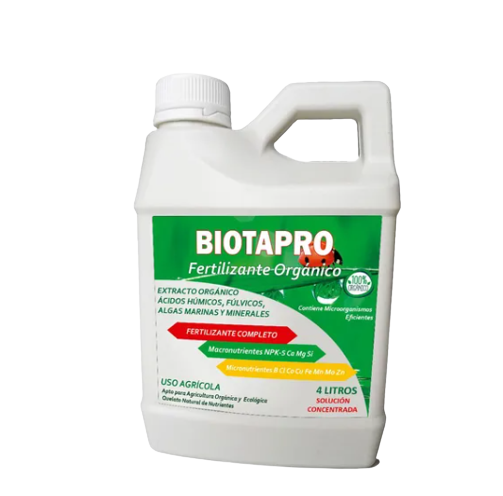
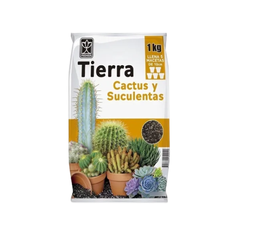
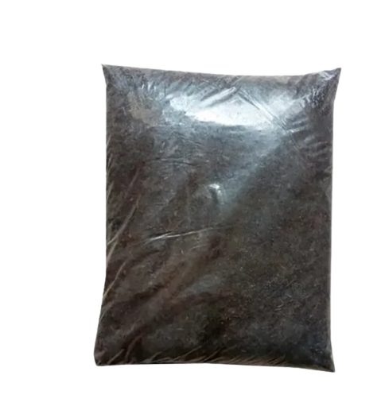
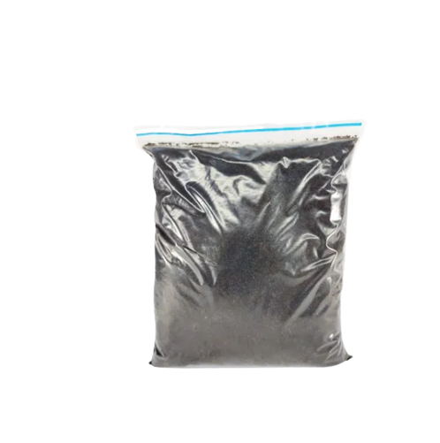

Abono

5KG de abono fertilizante triple 15-15-15 El Abono 15-15-15 es un fertilizante muy completo que permite tener una fuente óptima de los tres macro nutrientes primarios N-P-K, mejorando la calidad de algunas hortalizas de hoja y ornamentale
$46.900
Biotapro
Fertilizante orgánico líquido abono biofertilizante hidroponía todo tipo de plantas extracto húmicos y fúlvicos algas marinas minerales fertilizante completo macro y micro nutrientes con microorganismos nutrientes quelatados contenido: 1 litro fertilizante órganico abono biotapro
$24.990
sustracto
-Posee baja capacidad para retener líquidos. -Excelente sustrato para cultivos. -Mejora la aireación, la estructura del suelo y el drenaje. -Mejora la fertilidad del suelo. Excelente capacidad de intercambio catiónico. -Evita pérdidas de nutrientes por lixiviación y volatilización. -Mejora la estructura química del suelo. Disminuye la temperatura del suelo.
$9.400
tierra negra
Máximo 3 unidades por compra, la transportadora no puede llevar mas de eso por guía de envío. Tierra negra abonada y mejorada composición: tierra negra 80% fibra de coco y/o cascara de arroz 10% humus solido 10% Tierra negra rica en materia orgánica enriquecida con humus de lombriz y mejorada con fibra de coco para darle mayor aireación y bajar su peso respecto al volumen, mejora el drenaje y su la hace mas suelta.
$12.900
humos de lombris
El humus de lombriz roja californiana es un producto 100% orgánico, con las propiedades adecuadas para acondicionar el suelo en macetas o cultivos. Se recomienda mezclar con suelo en una proporción de 80:20 (80% de suelo y 20% de humus) para cultivos Beneficios, peso tota gramos 1500gr Mejora la estructura del suelo Estimula la flora microbiana Promueve la aparición de nuevos brotes Da mayor verdor a todas las plantas. No contamina el medio ambiente al ser 100% natural No perjudica la salud, se puede utilizar para reactivar mezclas de sustratos o en la preparación del subsuelo del jardín